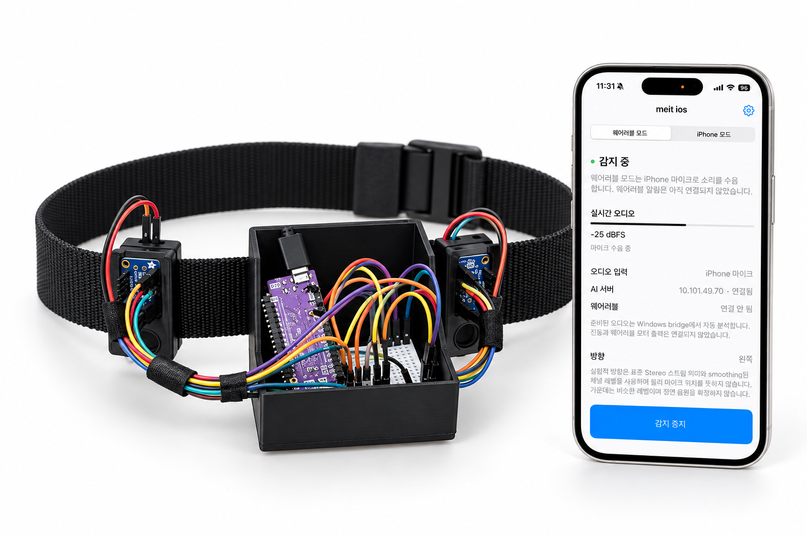
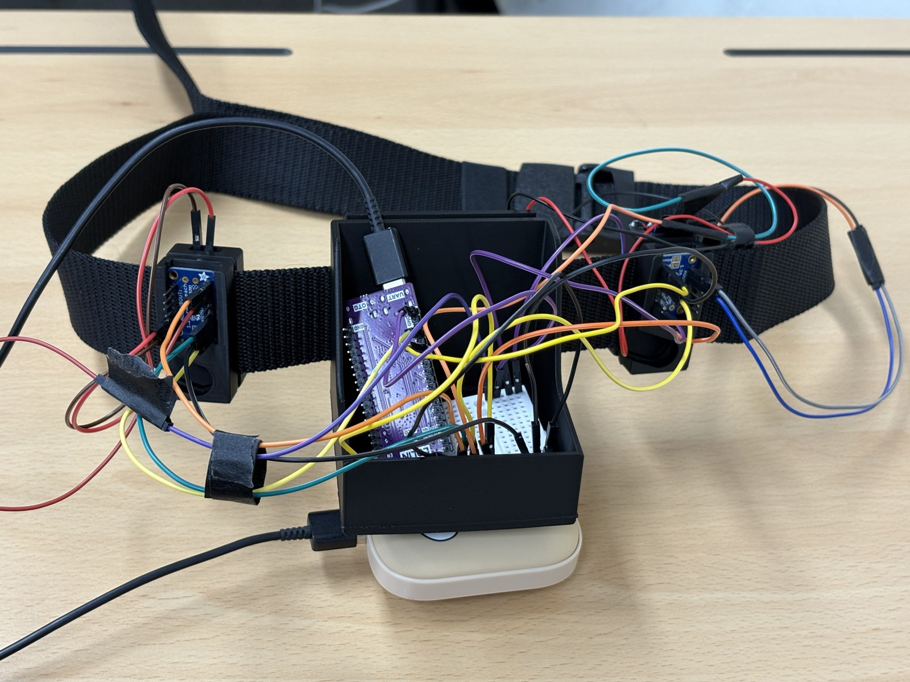
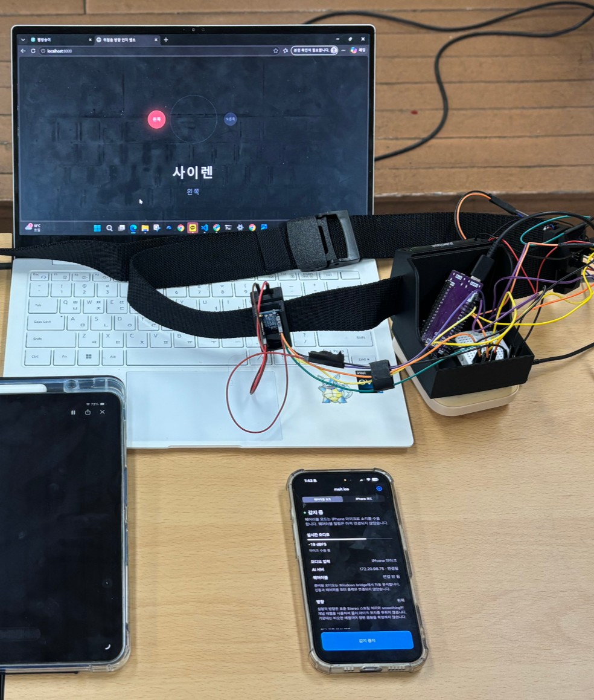
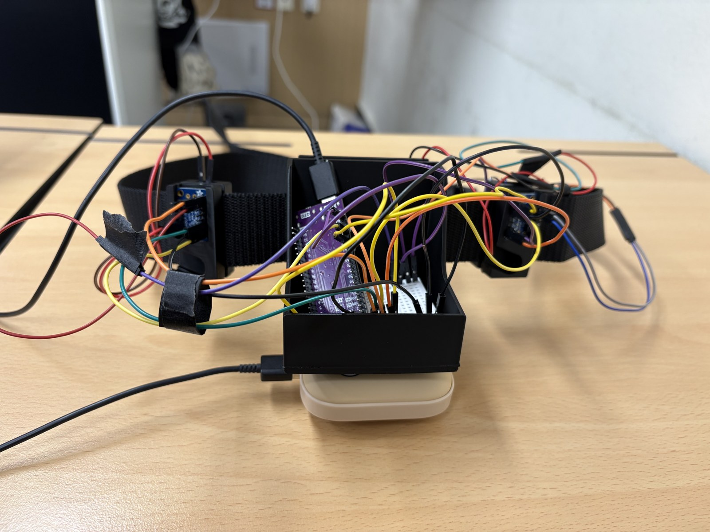
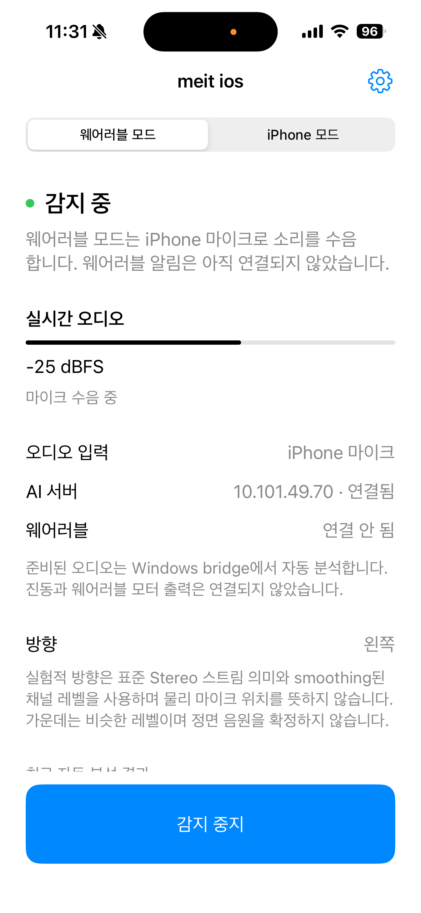
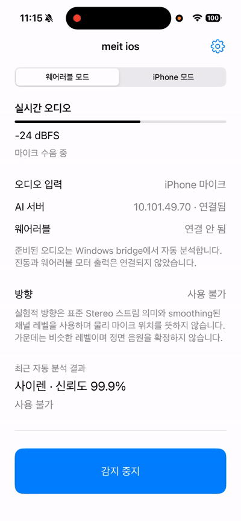
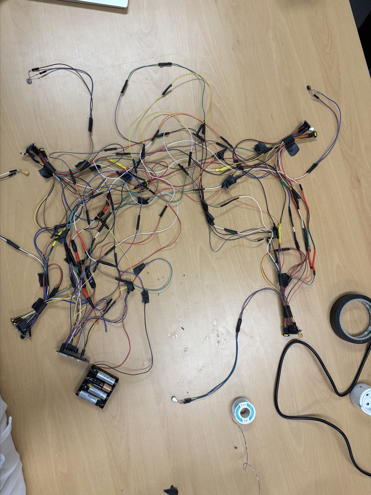
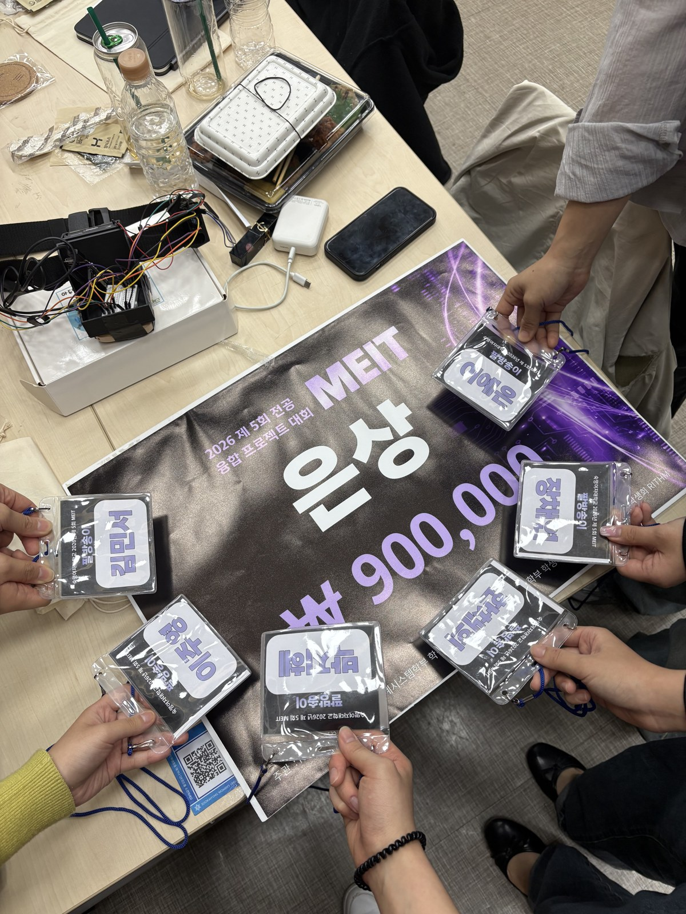

AI-based Directional Hazard Sound Haptic Alert System
Silver Award$900 Prize
Making a warning tangible: what happened, which side it came from, and how to communicate both through a wearable.
Project
Team 팔방송이
Development
Sep–Oct 2026
My role
Embedded / Electronics / iOS
Stack
ESP-IDF · Swift · Python · BLE



1 / 3
01 / Overview
Why this system?
When hearing is limited, nearby hazards can be easy to miss. This can affect people with hearing loss, noise-cancelling earphone users, and workers in noisy industrial environments.
WHATWhat is the hazard sound?
WHEREWhich direction is it coming from?
HOWHow can the warning be felt intuitively?
Screen-based warnings can require the user to look at a display and make direction difficult to convey at a glance. We built a wearable belt prototype that communicates sound type and direction through haptic feedback.
02 / System architecture
From sound to touch
System / Team Implementation
01 / iPhoneCapture + spatial cue
Stereo PCM · channel RMS · LEFT / CENTER / RIGHT
02 / Wi-Fi · HTTPAudio + Event metadata
16 kHz mono PCM16LE · latest 2.5 seconds
03 / Windows laptopClassify + Decide
iOS bridge → AI model → motor bridge
04 / BLEDeliver a haptic command
Direction · intensity · timed ON/OFF steps
05 / ESP32-S3Validate + Execute
Command parsing → FreeRTOS sequencer
06 / WearableFeel position + Rhythm
DRV8833 ×2 → left/right ERM motors
03 / Final prototype
The final hardware

Final motor-output circuit.
Active hardware and connections
Element
Implementation
Controller
LOLIN S3 / ESP32-S3
Motor outputs
GPIO21 → LEFT · GPIO13 → RIGHT
Drivers / Actuators
Two DRV8833 modules · Two 3 V ERM motors
Driver inputs
AIN1 = PWM · AIN2 = GND · nSLEEP = 3.3 V
Power
USB-C for MCU · Four-AA pack for motors · Common ground
04 / My contribution
My contribution
I worked across the embedded audio experiments, actuator firmware, hardware bring-up and iOS frontend.
A usable iOS audio frontend
Problem
The external microphone prototype did not provide reliable capture.
Implementation
Implemented stereo capture, stream-format checks, equal-weight downmix, a persistent AVAudioConverter and a 40,000-sample PCM16 ring buffer.
Why
Direction processing needs separate channels; the classifier needs a fixed mono format.
Result
A bounded pipeline produces the exact 80,000-byte payload required by the AI bridge.
Stable direction cues and integration
Problem
Small channel-level changes could repeatedly flip the displayed direction.
Implementation
Added linear-RMS EMA, separate entry/release thresholds, silence reset, wearable inference requests and completed-event status.
Why
Hysteresis retains a cue until evidence falls below its release threshold; event metadata keeps results associated with their audio.
Result
The final frontend exposes LEFT / CENTER / RIGHT / unavailable with a reusable HTTP contract.
Motor sequencing and hardware bring-up
Problem
BLE callbacks and timer callbacks must not compete over a running vibration pattern.
Implementation
Implemented the DRV8833 PWM sequencer with one FreeRTOS task owning pattern state, deadline checks and all-off recovery; corrected motor pins after hardware checks.
Why
Single ownership makes replacement and timeout handling explicit, including delayed or duplicate timer wakeups.
Result
The motor sequencer became part of the two-motor firmware.
Embedded acquisition and debugging
Problem
The original TDoA design depended on aligned capture and complete audio clips.
Implementation
Implemented and revised the embedded signal pipeline, repaired dual-I2S clock routing, and added an exact-length gate before forwarding reassembled BLE audio.
Why
A DMA transfer is not proof of valid acoustic data; a partially reassembled clip must not reach inference.
Result
Created reproducible bring-up and regression checks. The microphone frontend was ultimately replaced.
Circuit Design & Fabrication
Designed the circuit configuration, connected the components, wired and assembled the hardware, and carried out hardware bring-up for the wearable prototype.
05 / Collaboration
Team implementation
AI model and decision logic. The AI team implemented YAMNet embeddings, a trained Dense classification head, temperature calibration and hazard detection for horn, siren, crash and normal sounds.
Communication and integration. Collaborators implemented the BLE command layer, final haptic mapping and motor bridge.
Mechanical integration. Team members designed and fabricated the belt’s holders and mounting structure.
06 / Audio and software
Wearable Mode for iOS


1 / 2
Wearable Mode captures stereo audio, calculates a direction cue, prepares AI input, sends it over HTTP, and displays the result and connection state.
AVCaptureDeviceInput → stereo audio
AVCaptureAudioDataOutput → CMSampleBuffer
Channel RMS + direction cue
Mono downmix → AVAudioConverter
16 kHz PCM16LE → 2.5-second rolling buffer
HTTP request → AI result and state UI
The converter retains state across buffers. Reusable slots bound queued processing, and the snapshot contains the latest 40,000 samples.
07 / Signal processing
Stereo direction cues
The final cue uses stereo level differences. RMS is calculated per stereo channel, smoothed in the linear-amplitude domain, then compared in decibels.
N samples per measurement; each channel is evaluated independently.
α = 0.25. Smoothing is applied to linear RMS, not to dB values.
Enter LEFT/RIGHT at ±0.7 dB; retain it until the magnitude drops below 0.5 dB. Raw silence at or below −65 dBFS clears the history.
StereoDirectionEstimator.swift · hysteresis
case .left:
return difference >= configuration.releaseThresholdDB ? .left : .center
case .right:
return difference <= -configuration.releaseThresholdDB ? .right : .center
case .center, .unavailable:
if difference >= configuration.enterThresholdDB { return .left }
if difference <= -configuration.enterThresholdDB { return .right }
return .center
}
}
08 / Actuation
Motor sequencing and bring-up
I implemented the DRV8833 PWM motor sequencer and hardware bring-up. A dedicated FreeRTOS task owns the pattern state and timer operations; deadline checks control when the sequence advances, and failed timer starts return the outputs to all-off.
I also corrected the motor GPIO mapping after hardware checks and added host tests for output selection and timer races.
motor.c · deadline-controlled advancement
// Old, duplicate and inactive TICKs carry no authority to advance.
// A late wake-up may service a now-due step, but never an early one.
if (timer_armed && esp_timer_get_time() >= step_deadline_us) {
(void)esp_timer_stop(pattern_timer);
timer_armed = false;
advance_step();
}
09 / Engineering deep dive
The original TDoA investigation
Earlier research · Not in the final runtime
The first architecture explored four INMP441 microphones and eight directional sectors. The firmware used two stereo I2S receivers at 48 kHz: I2S0 master for FRONT/RIGHT and I2S1 slave for BACK/LEFT. L/R selection assigns microphones to opposite slots on a shared data line. BCLK clocks the bits; WS identifies the slot.
The shared clock pads were GPIO5/6, with data on GPIO7 and GPIO15. One stereo bus handles only two slots, so two buses were needed for four microphones. I repaired the GPIO Matrix routing so the slave received the master’s clock while the external pads remained outputs.
The legacy estimator uses GCC-PHAT: a cross-spectrum is normalized before inverse FFT, followed by a physically bounded lag search and parabolic peak interpolation. LEFT↔RIGHT and BACK↔FRONT delays supply the two axes; bus skew is subtracted in the delay domain.
Original four-microphone geometry · radius 0.08 m.
Fractional lag refines the sampled correlation peak.
At 48 kHz: 20.833 μs per sample. With the code’s c = 343 m/s, one sample corresponds to 7.146 mm of path difference; at 16 kHz it is 21.438 mm.
The two corrected pair delays are normalized by the opposite-microphone spacing divided by sound speed. atan2(vx, vy) yields an angle, then 45° sectors provide eight direction labels. A clock offset can masquerade as a propagation delay, which makes synchronization part of the estimator itself.
Two consumers, two sample-rate needs
The original direction path kept 48 kHz timing resolution, while AI expected 16 kHz audio. Embedded code used a 33-tap windowed-sinc low-pass filter before decimation by three, retaining phase across 1,024-sample frames. The final iOS path instead uses AVAudioConverter at the actual native rate.
10 / Development iterations
What changed, and why

Initial prototype / debugging only. The dense microphone and motor wiring shown here is not the final device.
Four microphones / eight sectors
Dual-I2S, GCC-PHAT and embedded audio transport explored spatial localization.
Two-microphone revision
Reduced the acquisition and output complexity, but reliable external capture remained unresolved.
iPhone audio / two-motor backend
Moved capture, resampling and direction cue generation into iOS; kept the belt focused on command execution.
Oct 1, 2026 · Sookmyung Women's University · Team Project

The competition brings together students from Mechanical Engineering, Artificial Intelligence Engineering, and Electronic Engineering. The 2026 theme was solving social problems through AI-enabled hardware and software integration.